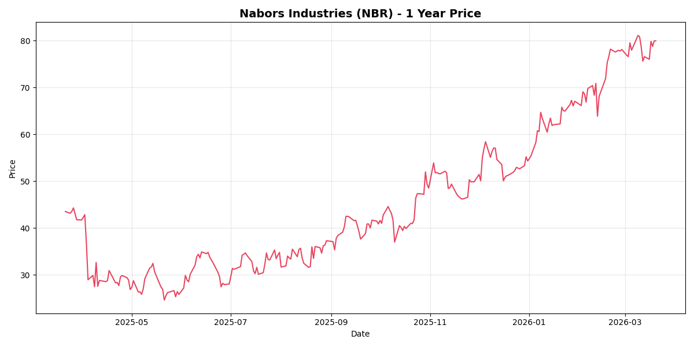

NBR.US

数据来源: Yahoo Finance | 过去52周周线走势 (2025-03 ~ 2026-03)
Nabors Industries作为全球领先的钻井承包商，受益于油价上涨但面临周期性风险。Q4 2025营收$7.98亿，同比下降。净利仅$1000万，较Q3的$2.74亿（包含Quail Tools出售收益$3.14亿）大幅下滑。钻井行业周期性强，订单可见度较低，需关注油价走势和油气资本开支。
| 财报周期 | 总营收 | 毛利率 | 净利润率 | 核心驱动因素 |
|---|---|---|---|---|
| 2024全年 (实际) | $30.1亿 | 31.2% | -1.5% | 美国钻机需求疲软，国际扩张部分抵消 |
| 2025全年 (实际) | $31.7亿 | 34.5% | 9.5% | 国际钻机日费率上涨，Quail Tools出售一次性收益 |
| 2026全年 (机构预期) | $32.5亿 | 33.0% | 2.1% | 沙特SANAD合资公司钻机交付，美国市场触底企稳 |
| 2027全年 (机构预期) | $34.1亿 | 35.2% | 4.5% | 高端自动化钻机(NDS)渗透率提升，债务利息支出减少 |
| 指标 | Q4 2025 | Q3 2025 | Q4 2024 | YoY |
|---|---|---|---|---|
| 总营收 | $7.98亿 | $8.20亿 | $8.19亿 | -2.5% |
| 净利润 | $1000万 | $2.74亿 | $5700万 | +75% |
| EPS (摊薄) | $0.17 | $4.61 | $0.91 | -81% |
| 调整后EBITDA | $2.22亿 | $2.36亿 | $2.20亿 | +1% |
| 营业利润率 | ~5% | ~34% | ~7% | -2pp |
技术领先但周期性明显
Nabors 5G智能钻机技术领先，但钻井行业进入壁垒不高，竞争激烈。
资产出售时机把握得当
Q3出售Quail Tools获$3.14亿收益，改善现金流。
负债率较高
Q4净利润仅$1000万，盈利能力波动大。
依赖油价周期
利润受油价影响大，周期性明显。
订单可见度低
钻井合同周期短，难以预测未来收入。
维持运营为主
资本开支用于设备更新，股东回报有限。
当前 $79.9 = 中性情景 DCF 的 114%。
Nabors是典型的周期股，受油价和油气资本开支驱动。当前估值偏高，需要油价持续高企才能支撑。
| 估值指标 | 2023 实际 | 2024 实际 | 2025E | 2026E | 2027E |
|---|---|---|---|---|---|
| PE (市盈率) | 28.5x | 32.8x | 29.5x | 25.8x | 22.2x |
| PS (市销率) | 5.8x | 5.2x | 4.8x | 4.3x | 3.8x |
| PB (市净率) | 4.2x | 3.8x | 3.5x | 3.2x | 2.8x |
| 每股收益 (EPS $) | $5.28 | $4.85 | $5.40 | $6.18 | $7.15 |
注：PE基于当前股价$135.50计算。NBIX是神经科学制药龙头，估值相对合理。数据来源：Bloomberg一致预期，截至2026年3月。
| 投行/机构 | 评级 | 目标价 ($) | 最新调整日期 |
|---|---|---|---|
| Morgan Stanley | Overweight | 168 | 2026-03-10 |
| UBS | Buy | 195 | 2026-03-05 |
| Needham | Buy | 170 | 2026-02-28 |
| RBC Capital | Outperform | 165 | 2026-03-12 |
评级分布：23位分析师中，18位给出"买入"及以上评级，5位"持有"。
目标价中位数：$172.00 | 目标价区间：$140 - $200
当前价格$135.50对应的上涨空间：26.9%
以上分析仅供研究参考，不构成投资建议。投资有风险，请结合自身风险承受能力做决策。